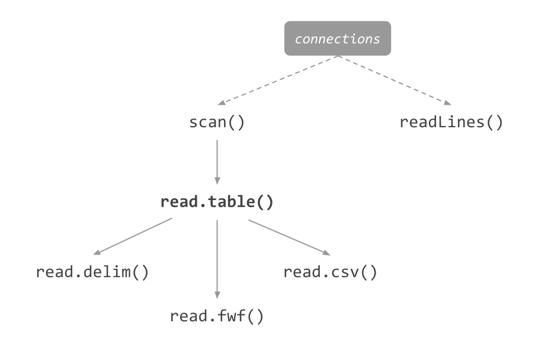
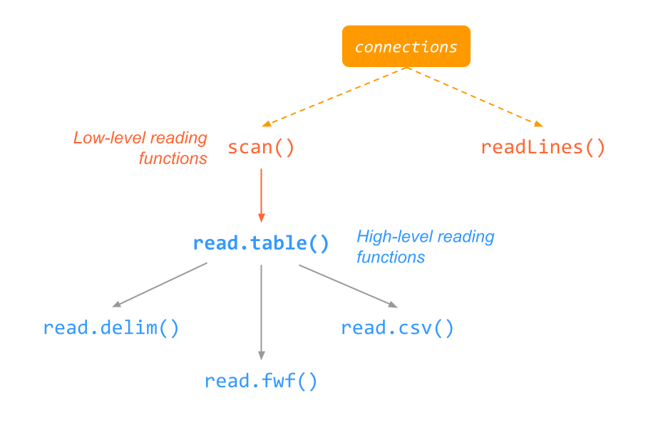
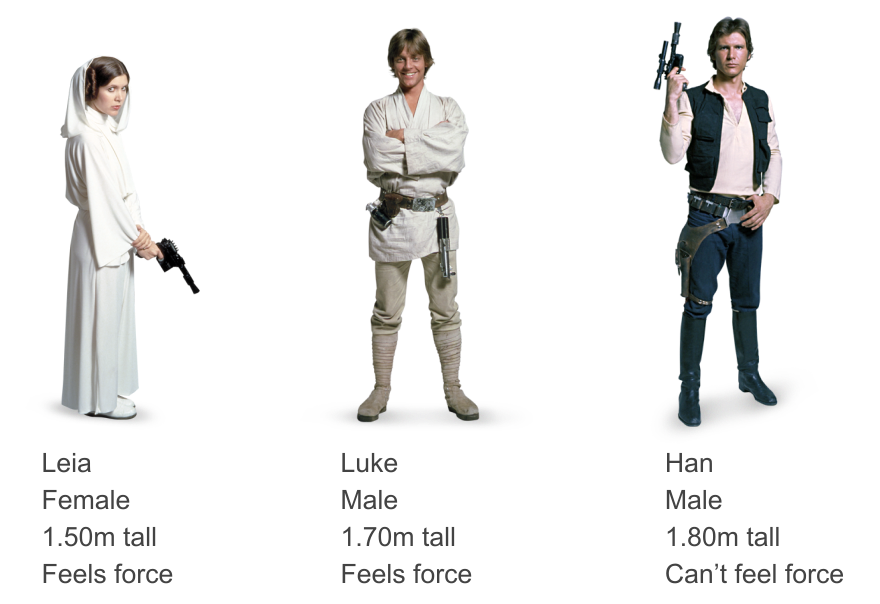

01:00
Importing Tables
Reading data in R
Gaston Sanchez
Example
Files containing the same data arranged in 2 different ways:
Question
What kind of R object would you use to store/handle this data set?
Reading Data Values with scan()
scan()
scan() example 1
You can modify the what argument to specify different data types:
Consider another file named file3.txt
By default, scan() expects to read “white-space” delimited input fields:
[1] "Leia" "is" "a" "1.50" "meters" "tall" "female" "Luke"
[9] "is" "a" "1.70" "meters" "tall" "male" "Han" "is"
[17] "a" "1.80" "meters" "tall" "male" This may not be the best option 😕
Consider another file named file3.txt
file3.txt
To scan each line at a time, we must change the separator argument from “white-space” to “new line character”, that is: sep = "\n"
Consider yet another file named file4.txt
- The first line is not that relevant.
- The subsequent lines (2-4) ARE important.
- The data in each line consists of:
- name
- gender
- height
Here’s how to use scan() to import file4.txt in R:
Another way to use scan() to import file4.txt in R:
File values.txt
Goal: I would like to have this data as:
- a
matrix - a
data.frame
02:00
As a matrix
[1] 10 20 30 40 50 60 70 80As a data.frame
$x
[1] 10 30 50 70
$y
[1] 20 40 60 80About scan()
scan()is R’s main low-level function to read in data values.- It imports data either into a vector or a list (argument
what). scan()expects to read “white-space” delimited input fields by default.- You can change the field separator with
sep. - In practice, you won’t be using
scan()that much, instead you’ll use high-level functions—which depend onscan(). - But now you know about its basic usage.
- See
?scanfor more information.
Reading a File
Reading a file, line-by-line
The standard recipe to read the content of a file follows these steps:
Establish a connection (or stream source) with the desired file.
Open the desired file in read mode.
Read each line, and check whether the end-of-file has been reached.
Parse and convert raw string into individual data points.
Close the connection to the file.
In R, pretty much all functions to import data take care of all these steps.
Most of the time you will be specifying arguments related to step 4 to tell R details about the parsing and data conversion.
Data Reading Functions in base R
Data Reading Functions in base R
Importing Data Tables
Tabular Data

Table
| Name | Gender | Height | Force |
|---|---|---|---|
| Leia | female | 1.50 | TRUE |
| Luke | male | 1.70 | TRUE |
| Han | male | 1.80 | FALSE |
Common formats to store tabular data
Space separated values
read.table() example 1.1
read.table() example 1.2
Space separated
read.table() example 2.1
read.csv() example 2.2
Importing Data Tables with "readr"

"readr" functions
"readr" |
base R | Description |
|---|---|---|
read_table() |
read.table() |
whitespace-separated files |
read_csv() |
read.csv() |
comma-separated values (CSV) |
read_csv2() |
read.csv2() |
semicolon-separated values (CSV) |
read_tsv() |
read.table() |
tab-separated values (TSV) |
read_delim() |
read.delim() |
delimited files (CSV and TSV) |
read_fwf() |
read.fwf() |
fixed-width files |
read_log() |
web log files |
About "readr"
Provides a fast and friendly way to read rectangular data from delimited files.
Designed to parse many types of data found in the wild.
Gives an informative problem report when parsing leads to unexpected results.
"readr"functions return a tibble instead of a dataframe.
Compared to base R, "readr" functions
Use a consistent naming scheme for the parameters (e.g.
col_namesandcol_typesnotheaderandcolClasses).Are generally much faster (up to 10x-100x) depending on the dataset.
Leave strings as is by default, and automatically parse common date/time formats.
Have a helpful progress bar if loading is going to take a while.
read_table() example
read_table() example
Space separated
Specifying col_types
# A tibble: 3 × 4
Name Gender Height Force
<chr> <chr> <dbl> <lgl>
1 Leia female 1.5 TRUE
2 Luke male 1.7 TRUE
3 Han male 1.8 FALSEread_table() example
Space separated
Column types and their abbreviations
l:col_logical()(TRUE/FALSE)i:col_integer()(integers)d:col_double()(floating-point numbers)c:col_character()(text, everything else)D:col_date()(dates)T:col_datetime()(date-times)t:col_time()(times)n:col_number()(numbers with grouping symbols like commas)f:col_factor()(factors/categorical data)?:col_guess()(let readr guess the type)_or-:col_skip()(ignore the column)
Comma separated
- Name (character)
- Gender (factor)
- Height (skip it)
- Force (logical)
read_fwf() example
Fixed width
Considerations
Before importing a data table in R
What is the file path?
What is the character(s) used as field delimiter?
Does the file contain names of columns?
Are there any missing values? If yes, how are they encoded?
Do you want/need to read in all rows?
Do you want/need to read in all columns?
Files from other programs
| Type | Package | Function |
|---|---|---|
| Excel | “readxl” | read_excel() |
| SPSS | “foreign” | read.spss() |
| SAS | “foreign” | read.ssd() |
| SAS | “foreign” | read.xport() |
| Matlab | “R.matlab” | readMat() |
| Stata | “foreign” | read.dta() |
| Octave | “foreign” | read.octave() |
| Minitab | “foreign” | read.mtp() |
| Systat | “foreign” | read.systat() |